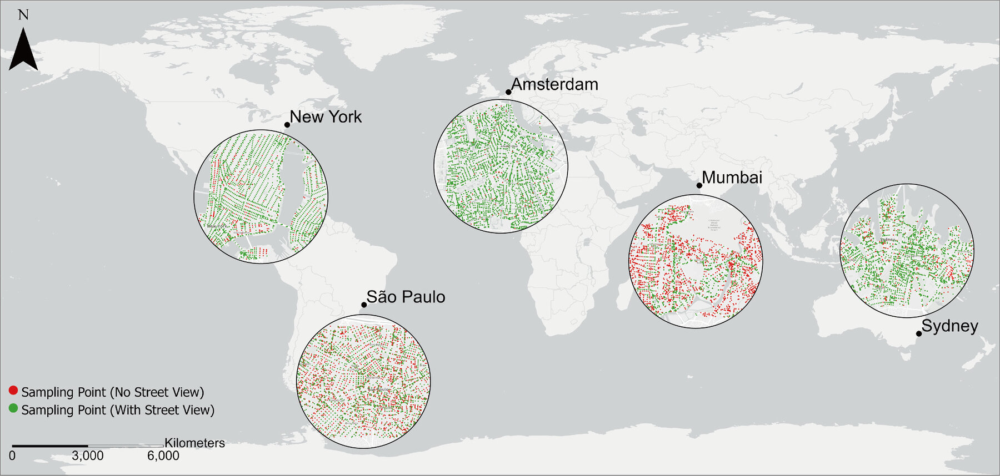
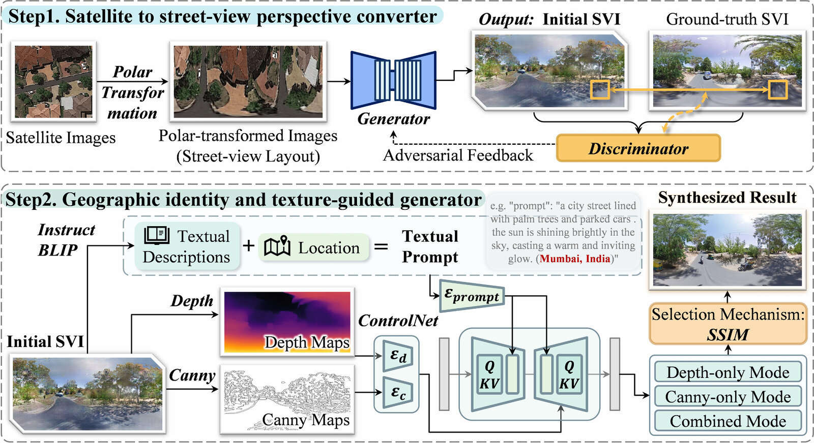
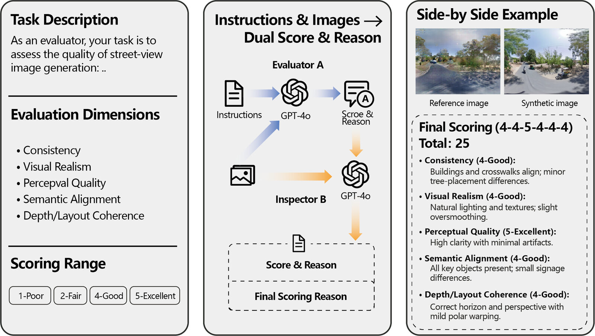
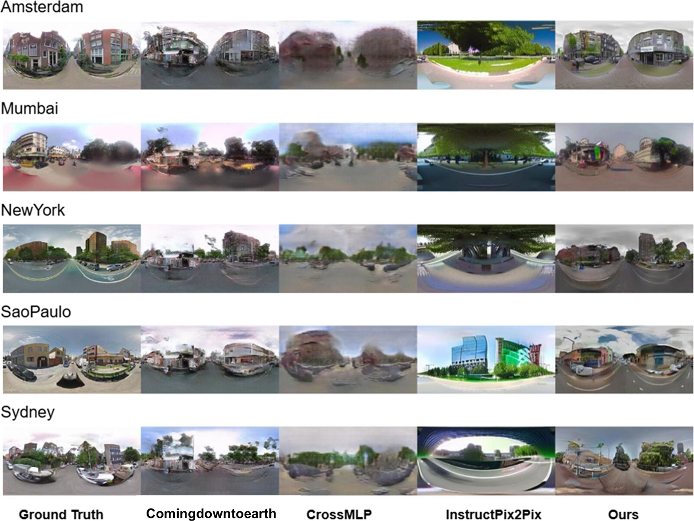
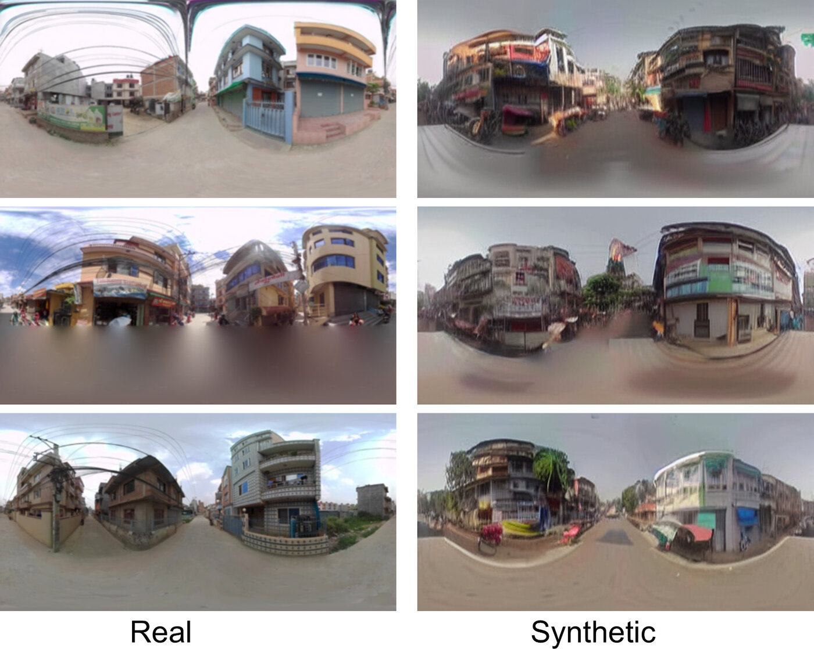

Street view imagery (SVI) provides a human-centric view of urban environments and is widely used for analyzing greenery, mobility, socioeconomics conditions, health outcomes, and safety perception. However, its coverage is highly uneven, with developing regions systematically underrepresented, limiting the inclusiveness of SVI-based analytics. To address this, we propose GeoIdentity-Sat2Street, a geographic identity preserving framework, that leverages satellite imagery to expand SVI coverage. Our framework first applies a polar-transformation conditional GAN to synthesize plausible street view perspectives, then refines them with a diffusion-based generator conditioned on semantic captions, location metadata, and structural priors. This design enforces geometric consistency while explicitly preserving geographic identity, an overlooked but critical aspect of urban distinctiveness. We conduct a comprehensive evaluation against baselines, covering generation quality, geographic identity preservation, and global scalability. First, on classic cross-view benchmarks (CVUSA and CVACT), our method achieves the highest SSIM (0.427 and 0.537), the lowest LPIPS (0.345 and 0.317), and the best mIoU (0.054). Next, to assess geographic identity fidelity, we introduce MultiCities Dataset, a benchmark of 50,000 paired satellite-street-view images across five cities on five continents. Our method achieves the highest Silhouette Score (0.222), lowest inter-city variance (0.031), and clearly separated clusters in t-SNE, demonstrating superior preservation of regional visual identity; GPT-based evaluation further confirms realism and semantic alignment (score 10.587-10.824). Finally, we apply our model to Kathmandu, Nepal achieving about a 28% improvement in usable street-view coverage, from 72% to dense roadside coverage. Overall, this work highlights the proposed identity preserving two-step pipeline as central to equitable SVI generation and provides a scalable framework toward globally representative urban analytics.
Street view imagery (SVI) provides a human-centric view of urban environments and is widely used to analyze greenery, mobility, socioeconomic conditions, health outcomes, and safety perception. Its global coverage, however, is highly uneven: published SVI studies concentrate in the United States and Europe, while developing regions across Asia, Africa, and South America remain systematically underrepresented, which limits the inclusiveness of SVI-based analytics and can introduce systematic bias into urban analysis outcomes.

Figure 1. Street view imagery coverage in selected cities.
We propose GeoIdentity-Sat2Street, a geographic identity preserving framework that leverages satellite imagery to expand SVI coverage. A polar-transformation conditional GAN first synthesizes plausible street view perspectives, and a diffusion-based generator then refines them conditioned on semantic captions, location metadata, and structural priors. This two-step design enforces geometric consistency while explicitly preserving geographic identity, an overlooked but critical aspect of urban distinctiveness.

Figure 2. The framework for geographic identity preserving street view imagery generation. Step 1 converts satellite images into an initial SVI providing the basic street view geometry; Step 2 refines it with depth, edges, text descriptions, and location cues.
On the classic CVUSA and CVACT cross-view benchmarks, the framework achieves the highest SSIM (0.427 and 0.537), the lowest LPIPS (0.345 and 0.317), and the best mIoU (0.054) among baselines. To assess geographic identity fidelity, we constructed the MultiCities Dataset, a benchmark of 50,000 paired satellite-street-view images across five cities on five continents. An automated GPT-4o evaluation pipeline, with GPT-4o acting successively as Evaluator and Inspector, provides task-specific quantitative and qualitative assessments.

Figure 3. Automated evaluation pipeline for street view imagery generation using GPT-4o, where GPT-4o acts as Evaluator A and Inspector B in a two-stage assessment.
Quantitative results on the CVUSA benchmark show that our method achieves the best SSIM, MS-SSIM, LPIPS, and KID among the compared models:
| Model | PSNR | SSIM | MS-SSIM | Edge_IoU | mIoU | LPIPS | KID |
|---|---|---|---|---|---|---|---|
| Ours | 14.565 | 0.427 | 0.438 | 0.131 | 0.052 | 0.345 | 0.086 |
| ComingDownToEarth | 14.032 | 0.233 | 0.363 | 0.153 | 0.054 | 0.355 | 0.066 |
| InstructPix2Pix | 12.501 | 0.339 | 0.236 | 0.056 | 0.040 | 0.539 | 0.040 |
| CrossMLP | 15.119 | 0.356 | 0.364 | 0.077 | 0.055 | 0.442 | 0.055 |
Table 1. Quantitative results on the CVUSA benchmark for evaluating generalization quality.
The model attains the highest Silhouette Score (0.222) and lowest inter-city variance (0.031), with clearly separated clusters in t-SNE, and GPT-based evaluation further confirms realism and semantic alignment. Qualitative comparisons across the five cities show that our results reproduce regionally distinctive streetscapes more faithfully than the baselines.

Figure 4. Qualitative comparison of street view imagery generation across five cities in the MultiCities Dataset.
Applying the framework to Kathmandu, Nepal improves usable street-view coverage by about 28%, moving from 72% partial coverage toward dense roadside coverage. The side-by-side comparison shows that the generated street views closely match the real urban scenes, indicating that identity preserving satellite-to-street generation offers a scalable way to fill coverage gaps in data-scarce regions and paves the way for more globally representative and equitable urban analytics.

Figure 5. Side-by-side comparison of real and synthesized street view in Kathmandu.